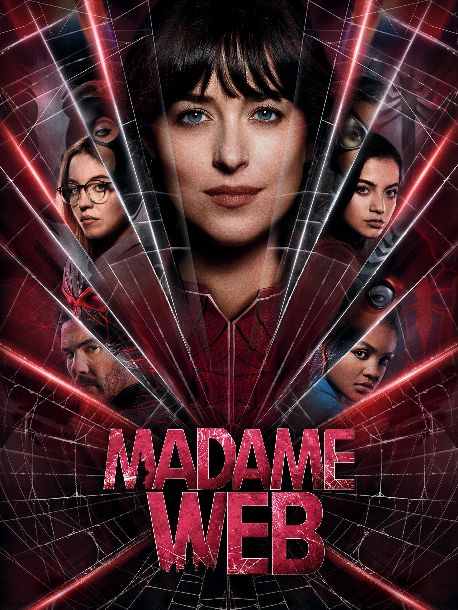
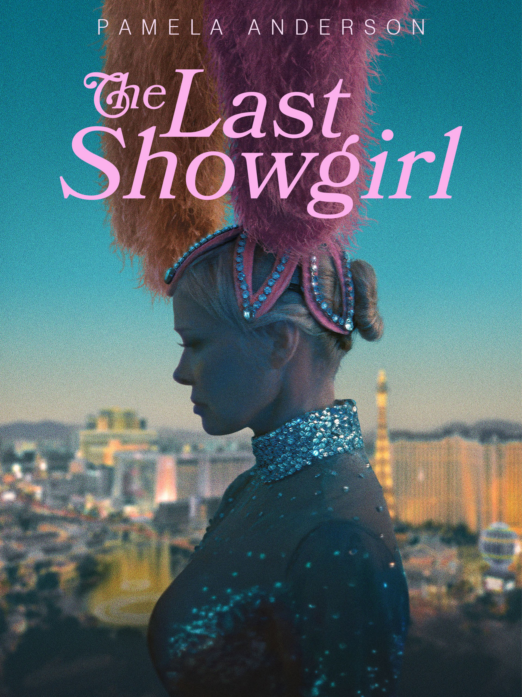

Nominacje i zwycięzcy z 2025 roku
Najgorszy film - wygrana: Madame Web

Pozostałe nominacje:
- Borderlands
- Joker: Folie à Deux
- Megalopolis
- Reagan
Najgorszy aktor - wygrana: Jerry Seinfeld - Bez lukru
Pozostałe nominacje:
- Jack Black - Drogi Mikołaju
- Joaquin Phoenix - Joker: Folie à Deux
- Zachary Levi - Harold i magiczna kredka
- Dennis Quaid - Reagan
Najgorsza aktorka - wygrana: Dakota Johnson - Madame Web
Pozostałe nominacje:
- Cate Blanchett - Borderlands
- Lady Gaga - Joker: Folie à Deux
- Bryce Dallas Howard - Argylle - Tajny szpieg
- Jennifer Lopez - Atlas
Najgorsza aktorka drugoplanowa - wygrana: Amy Schumer - Bez lukru
Pozostałe nominacje:
- FKA Twigs - Kruk
- Ariana DeBose - Argylle - Tajny szpieg, Kraven Łowca
- Lesley-Anne Down - Reagan
- Emma Roberts - Madame Web
Najgorszy aktor drugoplanowy - wygrana: Jon Voight - Strangers, Shadow Land, Reagan, Megalopolis
Pozostałe nominacje:
- Jack Black - Borderlands
- Kevin Hart - Borderlands
- Shia LaBeouf - Megalopolis
- Tahar Rahim - Madame Web
Najgorszy reżyser - wygrana: Francis Ford Coppola - Megalopolis
Pozostałe nominacje:
- S.J. Clarkson - Madame Web
- Eli Roth - Borderlands
- Todd Phillips - Joker: Folie à Deux
- Jerry Seinfeld - Bez lukru
Najgorszy scenariusz - wygrana: Madame Web
Pozostałe nominacje:
- Joker: Folie à Deux
- Kraven Łowca
- Megalopolis
- Reagan
Nagroda Odkupienia: Pamela Anderson - The Last Showgirl

Najgorszy prequel, remake, "zrzynka" lub sequel - wygrana: Joker: Folie à Deux
Pozostałe nominacje:
- Kruk
- Kraven Łowca
- Mufasa: Król Lew
- Rebel Moon - Część 2: Zadająca rany
Najgorsze combo - wygrana: Joker: Folie à Deux
Pozostałe nominacje:
- Borderlands - dowolna para irytujących postaci (ale głównie Jack Black))
- Bez lukru - dowolna para nieśmiesznych "komediowych aktorów"
- Megalopolis - cała obsada
- Reagan - jako "Ronnie i Nancy"